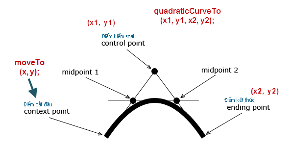

Vẽ đường cong Quadratic Curve
(Đường cong với 1 điểm kiểm soát)
HTML5 Canvas Quadratic Curve Tutorial
Để tạo ra một đường cong bậc hai với HTML5 Canvas, chúng ta có thể sử dụng method quadraticCurveTo(). Đường cong Quadratic Curve được xác định bởi 1 điểm bắt đầu, 1 điểm kiểm soát(điều khiển độ cong), và 1 điểm kết thúc.

Một điểm kiểm soát xác định độ cong của đường cong bậc hai bằng cách tạo ra 2 đường tiếp tuyến ảo được kết nối với điểm bắt đầu và điểm kết thúc.
Cấu trúc: quadraticCurveTo( controlX, controlY, endX, endY ).
- .moveTo(x0,y0) : x0,y0 tọa độ điểm bắt đầu.
- .quadraticCurveTo(x1, y1, x2, y2).
x1, y1: tọa độ điểm kiểm soát.
x2, y2: tọa độ điểm kết thúc.
Di chuyển điểm kiểm soát xa khỏi và di chuyển các điểm kiểm soát gần gũi hơn với các điểm bối cảnh và điểm kết thúc sẽ tạo ra đường cong rộng lớn hơn sẽ tạo ra những đường cong sắc nét hơn.
Di chuyển các điểm kiểm soát gần hơn với các điểm bắt đầu và điểm kết thúc sẽ tạo ra đường cong rộng lớn hơn
Khung edit HTML : (có thể sửa và test trực tiếp)